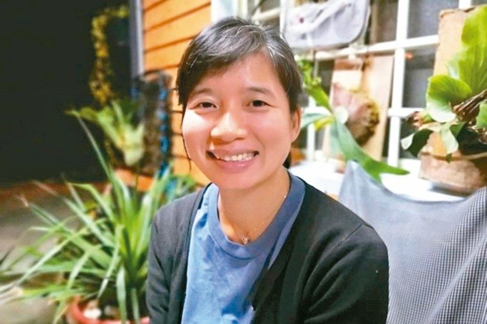

No. 01
Wenshan
文山共生之家 Wenshan
台北・文山
首間共生之家。鄰里長輩在午後茶點裡，把幾十年的故事，輕輕地交給彼此。
把伯拉罕（Plahan）的部落智慧編織成台灣現代鄰里的照顧網絡。
照顧不是被動的承接，而是一種主動的編織—— 把人、家屋、料理、語言、節氣，重新縫回彼此的生活。 我們希望讓每一位長輩在熟悉的鄰里裡，活得像個人，而不是像個個案。 從泰雅部落到都市鄰里，伯拉罕（Plahan）的火塘不會熄滅， 它只是換了爐灶，繼續溫熱台灣的每一張餐桌。
六處共生之家，從文山到知本，把照顧的火塘重新點亮在台灣的鄰里之間。
首間共生之家。鄰里長輩在午後茶點裡，把幾十年的故事，輕輕地交給彼此。
客家庄裡的灶下，把客家菜的味道、與粄條的節奏，重新搬回長輩的飯桌。
霧社事件後裔的部落，火塘從未熄滅；伯拉罕的精神在這裡，被慎重地接續。
舊鐵道與新社區之間，老鄰居有了新的廚房；下午三點，總有人在彈月琴。
海風與溫泉之間，卑南族的歌聲是飯前的祝禱；長輩的笑，是這個家最深的回聲。
在新竹、屏東、花蓮、雲林——四處新的火塘正等待被點亮，等待願意一起編織的鄰居。
當疾病來得又急又重，照顧不應該被切成醫院、長照、家庭三段。 我們把醫療、社區、家屬縫回一張完整的網——讓長輩在最脆弱的時刻，依然能被熟悉的人接住。
從出院前 72 小時開始，社區照顧員與醫療團隊共同參與會議，把醫囑變成日常裡可以做到的小事。
共生之家不是替代家，而是延伸的家。長輩在熟悉的鄰里裡，由認識的人，用熟悉的方言陪伴度過急重症期。
家屬不再是疲憊的獨行者。我們提供陪伴、課程、與喘息空間，讓「照顧的人」也被好好照顧。
從一位副市長走進部落，到一群相信「家」的人——這是創照的人。

「照顧不該是負擔，而是一份榮耀。」 從不老騎士到伯拉罕，從副市長辦公室回到部落的廚房—— 她相信，最好的照顧政策，永遠長在最深的鄰里裡。
家族的設計與品牌中樞，把每一個現場的學習，轉化成可以被複製的照顧服務模型。
Design Studio →從泰雅部落出發的共生照顧勞動合作社，是創照所有實踐的火塘與源頭。
Cooperative →把鄰里串成照顧網的草根行動——從街口的小店、廟埕的長板凳開始。
Community →把累積十年的部落智慧與長照經驗，提供給願意改變的縣市與機構。
Consulting →食農、共餐與在地物產的延伸——讓長輩的飯桌，重新與這片土地的節氣有關。
Food & Land →把十個世代、十個族群、十種語言連起來的下一個十年計劃。
Future →不論你是地方政府、企業夥伴、家屬，或只是想多了解一些的鄰居，創照都願意陪你坐下來，泡一壺茶，慢慢說。